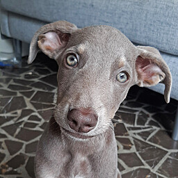

PERROS EN ADOPCIÓN
En esta sección puedes encontrar a todos los perros que estan disponibles para estar adoptados. En todos los casos se pide seguimiento y conocimiento del adoptante.
Nuestros Perros que buscan familia:
Toby Hachiko
Hachiko
 Kiara